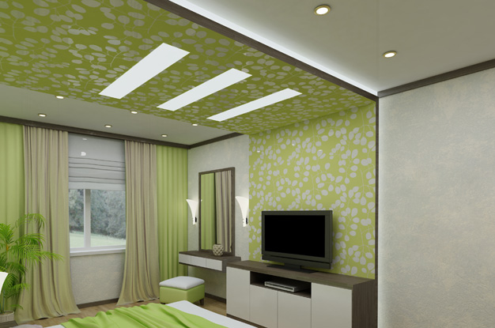
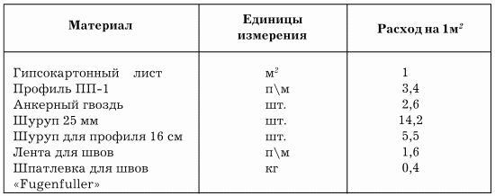

Подшивные потолки из гипсокартона.

Что такое гипсокартон? Это композитный материал в виде листов длиной 2,5–4,8 м, шириной 1,2–1,3 м и толщиной от 8 до 24 мм. Основу такого листа составляет гипс, а снаружи он облицован плотным картоном. Картон выполняет функцию армирующего каркаса, а также основы под другой строительный материал – шпатлевки, обоев, краски и пр.
В процессе производства в гипсокартон добавляют специальные компоненты, повышающие его эксплуатационные свойства.
На территории России особой популярностью пользуется гипсокартон немецкой фирмы „ТИГИ Кнауф“. Комплектующие для потолка из гипсокартона приведены в табл. 2.
Таблица 2. Комплектующие для монтажа потолков „ТИГИ Кнауф“
Гипсокартон идеально подходит для облицовки потолков в жилых помещениях, поскольку не содержит токсических компонентов, не оказывает вредного воздействия на окружающую среду, что подтверждено радиационными и гигиеническими сертификатами.
Довольно часто листы гипсокартона применяют в виде тепло– и звукоизоляционного материала. Кроме того, он негорюч и огнестоек: вы не сможете поджечь его, даже если захотите.
Гипсокартон регулирует микроклимат внутри помещений благодаря следующим свойствам:
– кислотность этого материала аналогична кислотности человеческой кожи;
– гипсокартон поглощает влагу при ее избытке в воздухе и отдает в том случае, если воздух слишком сухой.
Гипсокартонные листы (ГКЛ) подразделяются на следующие виды:
– обычный гипсокартонный лист для потолков, толщиной 9,5 см;
– влагостойкий ГКЛ, отличающийся от обычного специальным импрегнированным картоном, гидрофобными и антигрибковыми добавками. Этот вид гипсокартона применяется для отделки ванных, кухонь и душевых;
– огнестойкий ГКЛ, отличающийся от обычного наличием в составе специальных армированных веществ;
– пазогребневые листы, гипс в которых подвергнут обжигу. Эти листы настолько прочны, что их можно без опаски использовать в качестве межкомнатных перегородок, окрашивать, оклеивать обоями и даже облицовывать керамической плиткой.
Такие перегородки бывают двух-, трехслойными. В полостях листов гипсокартона можно прокладывать электрические и телефонные кабели, системы пылеудаления, отопительные и водопроводные коммуникации.
Гипсокартон известен давно, он назывался сухой штукатуркой и использовался для внутренней отделки жилых помещений и офисов. Однако сравнительно недавно произошло второе открытие этого материала, дизайнеры обнаружили, что с помощью ГКЛ можно устраивать купольные покрытия и арки, многоуровневые потолки, а также встраивать в них светильники различных модификаций...
Таким образом, в отделке появился новый сухой метод ремонта без надоевшей и приносящей значительные неудобства штукатурки.
Потолки из гипсокартонных панелей имеют ряд значительных преимуществ:
– отсутствие „влажностных“ процессов (замешивание строительного раствора, клея и пр.);
– легкость сборки;
– небольшой вес материала;
– снижение затрат на отделку потолков;
– звукоизоляционные качества материала;
– повышение огнестойкости несущих панелей.
В дальнейшем благодаря легкости конструкции вы сможете быстро и без особых усилий выполнить ремонтные работы.
Помимо этого, гипсокартонные потолки могут применяться в сейсмических районах без ограничений, причем в зданиях и сооружениях с сейсмичностью 7,8 и 9 баллов – без выполнения дополнительных мероприятий.
ИнструментыДля прикрепления гипсокартонных листов потребуются следующие инструменты:
– отвес;
– дрель с перфорированием;
– шуруповерт или дрель с реверсом;
– нож для резки гипсокартона со сменными лезвиями;
– рулетка;
– молоток;
– угольник;
– уровень.